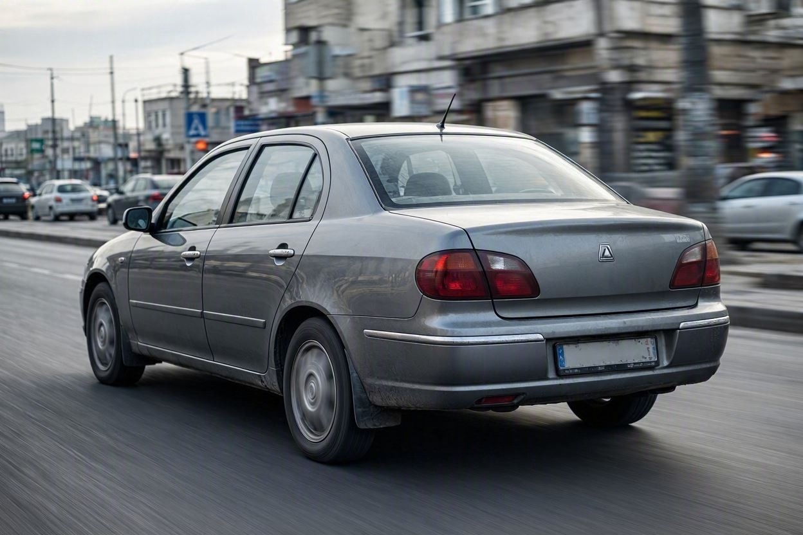
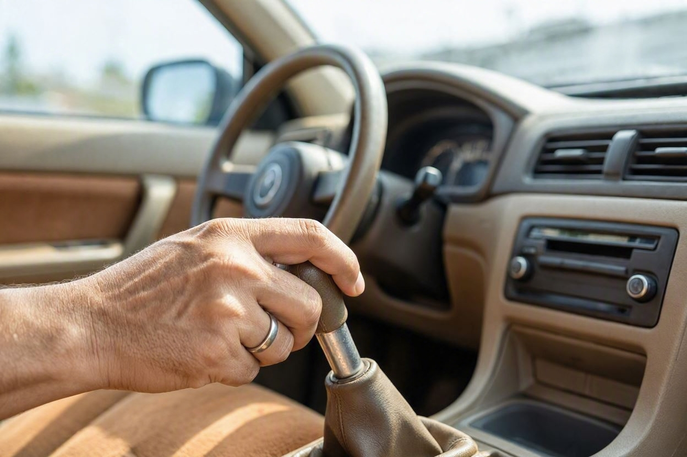
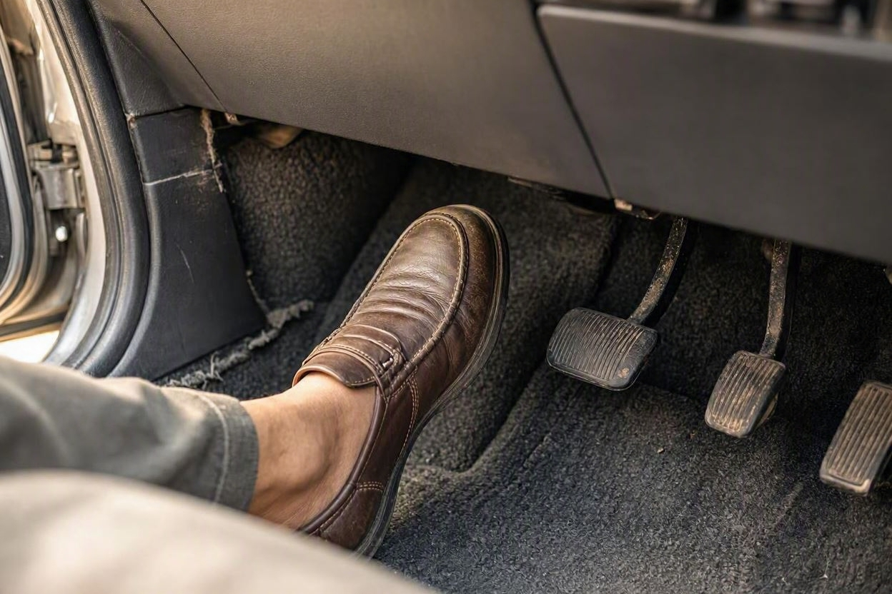
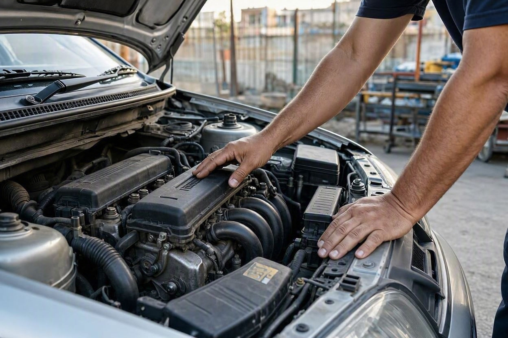

تست رانندگی خودرو دست دوم؛ ۱۲ ایرادی که فقط در حرکت مشخص میشوند
فرض کنید برای دیدن یک خودروی دست دوم رفتهاید. ظاهرش تمیز است، موتور در حالت درجا آرام کار میکند و فروشنده هم میگوید بیعیب است. اما خیلی از خریدارها همینجا اشتباه میکنند و بدون یک تست رانندگی درست، معامله را میبندند. راستش را بخواهید، بخش زیادی از ایرادهای جدی خودرو نه در پارکینگ، بلکه فقط پشت فرمان و در حال حرکت خود را نشان میدهند. در کارماچک این ۱۲ ایراد را که باید در تست رانندگی دنبالشان باشید، مرور میکنیم.
تست رانندگی خودرو دست دوم مهمترین بخش بررسی پیش از خرید است، چون بسیاری از ایرادها فقط در حرکت پیدا میشوند. مواردی مثل لغزش گیربکس، کشیدن فرمان به یک سمت، لرزش در سرعت بالا، صدای سیبک و طبق، ضعف ترمز، افت شتاب و گرم شدن موتور در حالت درجا دیده نمیشوند. برای تشخیص، خودرو را در سرعتها و شرایط مختلف برانید و به صدا، لرزش و رفتار آن دقت کنید.
خلاصه در یک دقیقه
- موتور آرام در حالت درجا دلیل سلامت نیست؛ رفتار خودرو زیر بار و در سرعت مهمتر است.
- تست رانندگی را در مسیر متنوع انجام دهید: خیابان صاف، دستانداز، سربالایی و سرعت بالا.
- به سه چیز بیشتر دقت کنید: صداهای غیرعادی، لرزشها و کشش خودرو به یک سمت.
- ایرادهای گیربکس، کلاچ، تعلیق و ترمز اغلب فقط در حرکت خود را نشان میدهند.
- اگر امکان بررسی دقیق نبود یا شک داشتید، تشخیص را به کارشناس بسپارید.

چرا تست رانندگی مهمتر از بررسی ظاهری است؟
بررسی ظاهر و بدنه لازم است، اما فقط بخشی از ماجراست. خیلی از قطعات خودرو تا وقتی زیر بار قرار نگیرند، رفتار واقعی خود را نشان نمیدهند. یک گیربکس ممکن است در حالت درجا کاملاً عادی بهنظر برسد اما هنگام تعویض دنده زیر بار بلغزد. یک سیستم تعلیق ممکن است ساکت باشد تا وقتی از روی دستانداز رد شوید.
در عمل، تست رانندگی همان لحظهای است که خودرو با شما صادق میشود. صدای موتور زیر گاز، رفتار فرمان در سرعت، عملکرد ترمز در ترمزگیری واقعی و کشش خودرو روی جاده صاف، چیزهایی هستند که در پارکینگ هرگز دیده نمیشوند. برای همین، اگر فقط یک مرحله از بررسی را جدی بگیرید، باید همین باشد.
قبل از شروع تست رانندگی چه کنیم؟
چند کار ساده باعث میشود تست رانندگی شما نتیجه بهتری بدهد:
- سیستم صوتی، بخاری و کولر را در ابتدا خاموش کنید تا صداهای خودرو را بهتر بشنوید.
- مسیری انتخاب کنید که هم خیابان صاف، هم دستانداز و ترجیحاً یک سربالایی داشته باشد.
- زمان کافی بگذارید؛ یک دور کوتاه دور بلوک برای قضاوت درست کافی نیست.
- در صورت امکان، بخشی از مسیر را خودتان و بخشی را کنار فروشنده بهعنوان سرنشین طی کنید.

۱۲ ایرادی که فقط در حرکت مشخص میشوند
این فهرست را میتوانید مثل یک چکلیست ذهنی هنگام رانندگی دنبال کنید. برای هر مورد گفتهایم به چه چیزی دقت کنید و آن نشانه معمولاً به چه مشکلی اشاره دارد.
- کشیدن فرمان به یک سمت:روی جاده صاف و مستقیم، فرمان را سبک رها کنید. اگر خودرو به یک طرف کشیده شد، میتواند به تنظیم نبودن زوایای چرخ، فرسودگی لاستیک یا مشکل تعلیق مربوط باشد.
- لرزش فرمان در سرعت بالا:لرزش فرمان در سرعتهای بالاتر معمولاً نشانه بالانس نبودن چرخها یا در موارد جدیتر مشکل در جلوبندی است.
- لغزش گیربکس اتوماتیک:هنگام افزایش گاز، اگر دور موتور بالا برود اما شتاب متناسب با آن نباشد، احتمال لغزش گیربکس وجود دارد. این یکی از پرهزینهترین ایرادهاست.
- تعویض دنده سخت یا با ضربه:در گیربکس دستی، سفت بودن یا صدای هنگام جا رفتن دنده و در اتوماتیک، ضربه هنگام تعویض، نیاز به بررسی دقیقتر دارد.
- لغزش یا بوی سوختگی کلاچ:در خودرو دندهای، اگر با رها کردن کلاچ در دنده بالا خودرو خفه نشد و دور موتور بیدلیل بالا رفت، کلاچ ممکن است در حال لغزیدن باشد.
- ضعف یا کشیدن ترمز به یک سمت:در ترمزگیری، خودرو باید مستقیم و بدون لرزش بایستد. کشیده شدن به یک سمت، لرزش پدال یا مسیر ترمز طولانی را جدی بگیرید.
- افت شتاب و بیجانی موتور:هنگام گاز دادن زیر بار، خودرو باید روان شتاب بگیرد. مکث، تکان یا افت قدرت میتواند به سیستم سوخت، جرقه یا موتور مربوط باشد.
- گرم شدن موتور در حرکت:دمای موتور در حالت درجا ممکن است عادی بماند اما زیر بار بالا برود. عقربه دما را در طول مسیر زیر نظر داشته باشید.
- صدای سیبک و طبق روی دستانداز:هنگام عبور از دستانداز یا پیچ، صدای تق تق از جلوبندی میتواند نشانه فرسودگی سیبک، طبق یا بوشها باشد.
- صدای بلبرینگ چرخ:صدای زوزهمانند که با افزایش سرعت بلندتر میشود یا هنگام پیچیدن تغییر میکند، اغلب به بلبرینگ چرخ اشاره دارد.
- روشن ماندن چراغهای هشدار در حرکت:برخی چراغها مثل ABS یا ایربگ ممکن است فقط پس از حرکت یا در شرایط خاص روشن شوند. به داشبورد در طول مسیر توجه کنید.
- لرزش کل بدنه هنگام ترمز:لرزش محسوس در پدال یا بدنه هنگام ترمز، معمولاً به تاب برداشتن دیسک ترمز مربوط است و در حالت ساکن دیده نمیشود.
قبل از پرداخت پول، از سلامت خودرو مطمئن شوید
اگر در تست رانندگی به صدا، لرزش یا رفتار خودرو مشکوک شدید، بررسی تخصصی میتواند منشأ دقیق ایراد و اثر آن بر هزینه تعمیر را روشن کند.
رزرو کارشناسی خودرو
اشتباهات رایج هنگام تست رانندگی
حتی وقتی خریدار تست رانندگی میکند، چند اشتباه باعث میشود ایرادها پنهان بمانند:
- رانندگی فقط در سرعت پایین و مسیر کوتاه، بدون رسیدن به سرعتهایی که لرزش را آشکار میکنند.
- روشن نگه داشتن سیستم صوتی که صداهای مهم خودرو را میپوشاند.
- تمرکز روی امکانات رفاهی بهجای گوش دادن به موتور، گیربکس و جلوبندی.
- نادیده گرفتن عقربه دما و چراغهای داشبورد در طول مسیر.
- اعتماد به این جمله که خودرو فقط باید کمی گرم شود تا ایرادش برطرف شود.
خیلی از خریدارها این بخش را نادیده میگیرند و بعد از خرید تازه متوجه صداها و لرزشها میشوند. چند دقیقه رانندگی دقیقتر، معمولاً از هزینههای سنگین بعدی جلوگیری میکند. اگر میخواهید فراتر از تست رانندگی هم مطمئن شوید، میتوانید کارشناسی خودرو قبل از خرید را در کنار آن انجام دهید.
کدام ایراد به کدام رفتار خودرو مربوط است؟
این جدول کوتاه کمک میکند در حین رانندگی سریعتر ربط بین نشانه و بخش مربوطه را پیدا کنید.
| نشانه در حرکت | بخش احتمالی مرتبط | چه زمانی جدی است |
|---|---|---|
| کشیدن فرمان به یک سمت | زوایای چرخ، لاستیک، تعلیق | وقتی روی جاده کاملاً صاف تکرار شود |
| لرزش در سرعت بالا | بالانس چرخ، جلوبندی | وقتی با افزایش سرعت بیشتر شود |
| دور بالا بدون شتاب متناسب | گیربکس یا کلاچ | تقریباً همیشه نیاز به بررسی دارد |
| صدای تق تق روی دستانداز | سیبک، طبق، بوشها | وقتی صدا واضح و تکرارشونده باشد |
| لرزش هنگام ترمز | دیسک ترمز | وقتی در پدال یا فرمان حس شود |

چه زمانی سراغ کارشناس بروید
تست رانندگی به شما کمک میکند وجود یک مشکل را حس کنید، اما همیشه منشأ دقیق آن را روشن نمیکند. در این حالتها بهتر است بررسی را به کارشناس بسپارید:
- وقتی صدا یا لرزشی حس میکنید اما نمیدانید از کدام بخش خودرو میآید.
- وقتی به سلامت گیربکس اتوماتیک یا موتور شک دارید، چون تعمیر آنها هزینه بالایی دارد.
- وقتی فروشنده اجازه تست رانندگی کامل یا طولانی نمیدهد.
- وقتی رقم معامله بالاست و میخواهید با اطمینان بیشتری تصمیم بگیرید.
کارشناس با ابزار تشخیص مثل دستگاه دیاگ و بررسی تخصصی جلوبندی میتواند چیزهایی را مشخص کند که در یک تست رانندگی معمولی فقط بهصورت حس مبهم درک میشوند. البته توجه داشته باشید هیچ بررسیای تشخیص صددرصد و بدون خطا نیست؛ هدف، کم کردن ریسک معامله است.
کارماچک خدمات کارشناسی خودرو را برای بررسی فنی، موتور، گیربکس، جلوبندی و عوامل مؤثر بر ارزش معامله ارائه میدهد. رویکرد ما ساده است: فقط ایراد خودرو را شناسایی نمیکنیم؛ اثر آن روی هزینه تعمیر و ارزش واقعی معامله را هم مشخص میکنیم.
جمعبندی
تست رانندگی خودرو دست دوم فقط یک آزمایش تشریفاتی نیست؛ همان جایی است که بخش بزرگی از ایرادهای پنهان خود را نشان میدهند. با گوش دادن به صداها، توجه به لرزشها و دقت به رفتار فرمان و ترمز در سرعتها و مسیرهای مختلف، میتوانید بسیاری از مشکلات را پیش از خرید حس کنید. اگر نشانهای جدی دیدید یا منشأ آن برایتان روشن نبود، بررسی تخصصی میتواند تصمیم شما را مطمئنتر کند.
با خیال راحتتر خودرو دست دوم بخرید
اگر میخواهید فراتر از تست رانندگی، وضعیت فنی و فنی خودرو را دقیقتر بدانید، کارشناسان کارماچک کنار شما هستند.
ثبت درخواست کارشناسیسؤالات متداول
تست رانندگی خودرو دست دوم چقدر باید طول بکشد؟
یک دور کوتاه دور بلوک کافی نیست. سعی کنید دستکم چند کیلومتر و در مسیری متنوع شامل خیابان صاف، دستانداز و در صورت امکان سربالایی رانندگی کنید. برخی ایرادها مثل گرم شدن موتور یا لغزش گیربکس تنها بعد از چند دقیقه رانندگی زیر بار خود را نشان میدهند.
مهمترین چیزی که باید هنگام تست رانندگی به آن دقت کنم چیست؟
به سه چیز بیشتر از همه توجه کنید: صداهای غیرعادی، لرزشها و کشش خودرو به یک سمت. این سه نشانه اغلب اولین سرنخ ایرادهای گیربکس، تعلیق، ترمز و جلوبندی هستند که در حالت ساکن دیده نمیشوند.
چطور بفهمم گیربکس اتوماتیک مشکل دارد؟
هنگام گاز دادن به دور بالا رفتن موتور بدون افزایش متناسب سرعت دقت کنید؛ این میتواند نشانه لغزش گیربکس باشد. ضربه هنگام تعویض دنده، مکث طولانی در تعویض یا تکانهای غیرعادی هم باید جدی گرفته شوند. تشخیص قطعی معمولاً به دیاگ و بررسی تخصصی نیاز دارد.
آیا کشیدن فرمان به یک سمت همیشه ایراد جدی است؟
نه لزوماً. گاهی فقط به تنظیم نبودن زوایای چرخ یا فرسودگی نامتوازن لاستیک مربوط است که هزینه زیادی ندارد. اما همین نشانه میتواند به مشکل تعلیق هم اشاره کند. اگر روی جاده کاملاً صاف تکرار شد، بهتر است منشأ آن با بررسی دقیق مشخص شود.
اگر فروشنده اجازه تست رانندگی نداد چه کنم؟
نبود امکان تست رانندگی کامل، خودش یک علامت هشدار است. در این حالت با احتیاط بیشتری تصمیم بگیرید و روی بررسی تخصصی خودرو تأکید کنید. خرید خودرویی که نتوانستهاید رفتار آن را در حرکت ببینید، ریسک معامله را بالا میبرد.
آیا تست رانندگی جای کارشناسی خودرو را میگیرد؟
خیر. تست رانندگی به شما کمک میکند وجود مشکل را حس کنید، اما منشأ دقیق و شدت آن را همیشه مشخص نمیکند. کارشناسی خودرو با ابزار دیاگ و بررسی فنی، مکمل تست رانندگی است و تصویر کاملتری از وضعیت خودرو میدهد.